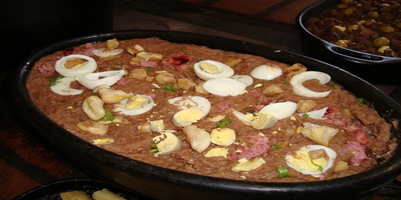

Tutu a Mineira

INGREDIENTES
- >500g de feijão preto
- 500g de linguiça de porco
- 03 dentes de alho amassados
- 03 cebolas picadinhas
- 03 cebolas em rodelas
- 03 tomates sem peles e sementes picados
- 02 colheres (sopa) de molho de tomate
- 5 colheres (sopa) de farinha de mandioca
- 05 ovos cozidos
- Sal a gosto
- Cheiro verde picado à gosto
PORÇÕES
Serve 6 pessoas
TEMPO DE PREPARO
60 minutos
PASSO A PASSO
>
- Em uma panela, coloque o feijão para cozinhar.
- Enquanto o feijão cozinha, em outra panela, frite a linguiça
- Assim que estiver frita, adicione a cebola picada, o alho, o tamate picado, o molho de tomate e misture bem
- Adicione o refogado da panela ao feijão e bata no liquidificador
- Retorne a mistura para a panela, adicione a farinha de mandioca, mexendo sempre, para não empelotar.
- Passe para uma travessa e coloque os ovos cozidos picados e o cheiro-verde por cima.
- Sirva quente.